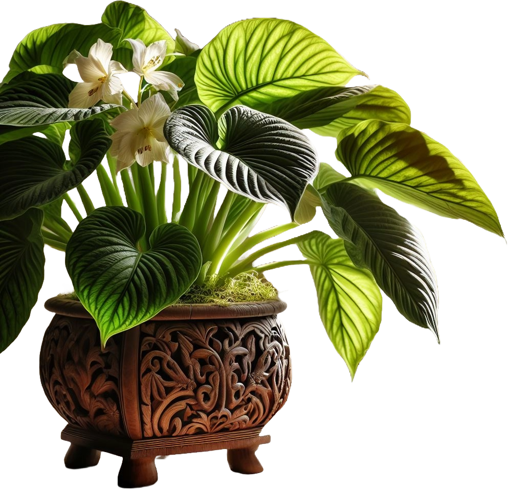

¡Bienvenido a la seccion de plantas!
Aprende sobre las diferentes especies de plantas, sus cuidados y necesidades, y cómo convivir armoniosamente con tus plantas y tus gatos. Descubre la belleza y el poder de la naturaleza, y cómo puede transformar tu vida y la de tus mascotas. ¡Sumérgete en el mundo de las plantas y deja que la naturaleza te sorprenda!
Las plantas son como gatos, en su paciencia infinita,
esperan el momento adecuado para dar su flor bonita.
Los gatos son como plantas, en su necesitad de sol,
buscan el calor y la luz, para crecer con amor.
Plantas que les encanta a los gatos
Aqui te enseñare algunas plantas que atrae a los gatos por su olor y sabor. Los gatos suelen masticar las hojas y frotarse contra las plantas. Son fáciles de cultivar en interiores o exteriores y pueden crecer en una variedad de condiciones de luz y suelo.
Menta (Mentha)

Valeriana (Valeriana officinalis)

Cebollino (Allium schoenoprasum)


Lavanda (Lavandula)

Rosas


Caléndula (Calendula officinalis)


Pepino (Cucumis sativus)


Tomate (Solanum lycopersicum)
Zanahoria (Daucus carota)

Es importante recordar que cada gato es único y tiene diferentes preferencias y comportamientos, por lo que es importante observar el comportamiento de tu gato y proporcionarle un entorno seguro y adecuado. Además, es importante tener en cuenta que algunas plantas pueden ser tóxicas para los gatos, por lo que es importante investigar antes de introducir nuevas plantas en tu hogar.
Plantas de facil cuidado
Aqui te mostrare plantas fáciles de mantener tanto en interiores como en exteriores y algunos consejos de cuidado.
-
Suculentas (Crassulaceae)
Son plantas que almacenan agua en sus hojas, lo que les permite sobrevivir en condiciones secas. Son ideales para interiores ya que pueden crecer en macetas pequeñas y no necesitan mucho riego. En exteriores, necesitan suelos bien drenados y exposición a pleno sol.


-
Cactus (Cactaceae)
Al igual que las suculentas, los cactus son plantas que almacenan agua en sus tallos. Son muy resistentes y fáciles de mantener, tanto en interiores como en exteriores. Necesitan poca agua y mucha luz solar.
-
Pothos (Epipremnum aureum)
También conocida como "planta del diablo", el pothos es una planta de interior muy popular debido a su capacidad para crecer en condiciones de poca luz y su facilidad de cuidado. Necesita riego moderado y no tolera el frío.
-
Lengua de suegra (Sansevieria trifasciata)
Esta planta es conocida por su resistencia y su capacidad para purificar el aire. Es ideal para interiores ya que puede tolerar condiciones de poca luz y necesita poco riego.

-
Lirio de paz (Spathiphyllum)
Esta planta es conocida por sus hermosas flores blancas y su capacidad para purificar el aire. Es ideal para interiores ya que puede tolerar condiciones de poca luz y necesita riego moderado.
-
Palo de Brasil (Dracaena marginata)
Esta planta es conocida por su aspecto exótico y su facilidad de cuidado. Es ideal para interiores ya que puede tolerar condiciones de poca luz y necesita riego moderado.
-
Cinta (Chlorophytum comosum)
También conocida como "malamadre", esta planta es conocida por su capacidad para purificar el aire. Es ideal para interiores ya que puede tolerar condiciones de poca luz y necesita riego moderado.
-
Helecho de Boston (Nephrolepis exaltata)
Esta planta es conocida por su aspecto exótico y su facilidad de cuidado. Es ideal para interiores ya que puede tolerar condiciones de poca luz y necesita riego moderado.

Recuerda que cada planta es única y puede tener diferentes necesidades de cuidado, por lo que es importante investigar antes de introducir nuevas plantas en tu hogar.